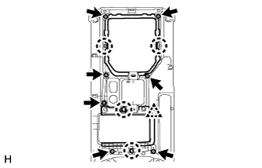
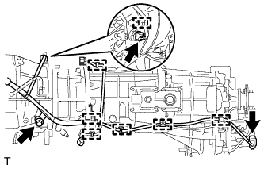
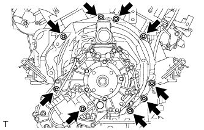
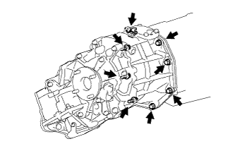

МЕХАНИЧЕСКАЯ ТРАНСМИССИЯ В СБОРЕ (для моделей с 1GR-FE) > СНЯТИЕ |
| 1. ОТСОЕДИНИТЕ ПРОВОД ОТ ОТРИЦАТЕЛЬНОГО ВЫВОДА АККУМУЛЯТОРНОЙ БАТАРЕИ |
| 2. СНИМИТЕ РУКОЯТКУ РЫЧАГА ПЕРЕКЛЮЧЕНИЯ ПЕРЕДАЧ В СБОРЕ |
Снимите рукоятку рычага с рычага переключения передач.
| 3. СНИМИТЕ ОБЛИЦОВКУ ПАНЕЛИ ПОЛА В СБОРЕ |
|  |
Выверните 7 винтов.
Освободите 4 захвата и фиксатор и снимите верхнюю облицовку панели пола.
| 4. СНИМИТЕ ЧЕХОЛ РЫЧАГА ПЕРЕКЛЮЧЕНИЯ ПЕРЕДАЧ В СБОРЕ |
Выверните 4 винта и снимите 2 фиксатора и чехол рычага переключения передач.
| 5. СНИМИТЕ НАПОЛЬНЫЙ РЫЧАГ ПЕРЕКЛЮЧЕНИЯ ПЕРЕДАЧ В СБОРЕ |
 |
Открепите чехол крышки рычага переключения передач от механической трансмиссии.
Закройте крышку рычага переключения передач тканью.
| *1 | Ткань |
| *a | Вниз |
| *b | Против часовой стрелки |
Надавливая на крышку рычага переключения передач, поверните ее против часовой стрелки, чтобы снять рычаг переключения передач.
Вытяните и снимите рычаг переключения передач.
| 6. СЛЕЙТЕ МАСЛО МЕХАНИЧЕСКОЙ ТРАНСМИССИИ |
Снимите пробку сливного отверстия и прокладку, а затем слейте масло механической трансмиссии.
Установите новую прокладку и пробку сливного отверстия.
| 7. СНИМИТЕ ПРИЕМНУЮ ТРУБУ В СБОРЕ |
Снимите приемную трубу (Нажмите здесь).
| 8. СНИМИТЕ ТЕПЛОЗАЩИТНЫЙ ЭКРАН КАРДАННОГО ВАЛА |
Выверните 2 болта и снимите теплозащитный экран карданного вала.
| 9. СНИМИТЕ НИЖНИЙ ЗАЩИТНЫЙ КОЖУХ КАРТЕРА РАЗДАТОЧНОЙ КОРОБКИ |
Выверните 4 болтов и снимите нижний защитный кожух картера раздаточной коробки.
| 10. СНИМИТЕ ПЕРЕДНИЙ КАРДАННЫЙ ВАЛ В СБОРЕ |
Снимите передний карданный вал (Нажмите здесь).
| 11. СНИМИТЕ КАРДАННЫЙ ВАЛ В СБОРЕ |
Снимите карданный вал (Нажмите здесь).
| 12. СНИМИТЕ СТАРТЕР В СБОРЕ |
Снимите стартер (Нажмите здесь).
| 13. СНИМИТЕ КОЖУХ КАРТЕРА СЦЕПЛЕНИЯ № 1 |
 |
Выверните 4 болта и снимите крышку картера.
| 14. СНИМИТЕ РАБОЧИЙ ЦИЛИНДР СЦЕПЛЕНИЯ В СБОРЕ |
Снимите рабочий цилиндр (Нажмите здесь).
| 15. СНИМИТЕ ГИДРОАККУМУЛЯТОР ПРИВОДА СЦЕПЛЕНИЯ В СБОРЕ |
Снимите гидроаккумулятор привода сцепления (Нажмите здесь).
| 16. ПОДОПРИТЕ МЕХАНИЧЕСКУЮ ТРАНСМИССИЮ С РАЗДАТОЧНОЙ КОРОБКОЙ |
Поддомкратьте механическую трансмиссию телескопическим гидравлическим домкратом.
| 17. СНИМИТЕ ЛЕВЫЙ КРОНШТЕЙН ЭЛЕМЕНТА ПЕРЕДНЕЙ ПОДВЕСКИ |
Выверните 4 болта и снимите левый кронштейн элемента передней подвески.
| 18. СНИМИТЕ ПРАВЫЙ КРОНШТЕЙН ЭЛЕМЕНТА ПЕРЕДНЕЙ ПОДВЕСКИ |
Выверните 4 болта и снимите правый кронштейн элемента передней подвески.
| 19. СНИМИТЕ ПОПЕРЕЧИНУ РАМЫ № 3 В СБОРЕ |
Подоприте заднюю часть трансмиссии с помощью опорной стойки.
 |
Выверните 4 болта из поперечины рамы № 3 в сборе.
 |
Отверните 4 гайки и снимите 4 болта и поперечину рамы № 3 в сборе.
| 20. СНИМИТЕ ПРАВУЮ ПЕРЕДНЮЮ ПОДУШКУ ОПОРЫ ДВИГАТЕЛЯ |
Выверните болт и снимите подушку опоры.
| 21. СНИМИТЕ ЗАДНЮЮ ПОДУШКУ ОПОРЫ ДВИГАТЕЛЯ № 1 |
 |
Выверните 4 болта и снимите подушку опоры двигателя с механической трансмиссии.
| 22. ОТСОЕДИНИТЕ ЖГУТ ПРОВОДОВ |
|  |
Отсоедините 2 разъема.
Снимите 7 зажимов.
Отсоедините разъем выключателя света заднего хода.
Выверните болт и отсоедините жгут проводов.
| 23. ОТСОЕДИНИТЕ ШЛАНГ САПУНА МЕХАНИЧЕСКОЙ ТРАНСМИССИИ И РАЗДАТОЧНОЙ КОРОБКИ В СБОРЕ |
Открепите зажим шланга сапуна.
Отсоедините 4 шланга сапуна от кронштейна и картера сцепления.
Отсоедините 2 шланга сапуна от переходника раздаточной коробки.
| 24. СНИМИТЕ МЕХАНИЧЕСКУЮ ТРАНСМИССИЮ С РАЗДАТОЧНОЙ КОРОБКОЙ |
Поддомкратьте трансмиссию с помощью телескопического гидравлического домкрата.
Снимите опорную стойку с трансмиссии.
|  |
Выверните 9 болтов.
Снимите механическую трансмиссию с раздаточной коробкой.
| 25. СНИМИТЕ ВЕРХНЮЮ КРЫШКУ ТРАНСМИССИИ В СБОРЕ |
Выверните 2 болта и снимите верхнюю крышку.
| 26. СНИМИТЕ РАЗДАТОЧНУЮ КОРОБКУ В СБОРЕ |
 |
Для моделей с 1KD-FTV:
| *A | Для моделей с 1KD-FTV, RA61F |
| *B | Для моделей с 1KD-FTV, A750F |
|  |
Кроме моделей с 1KD-FTV:
Выверните 8 болтов и снимите кронштейн.
Отсоедините раздаточную коробку от трансмиссии.